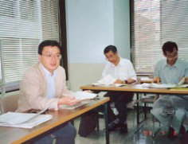
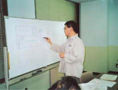
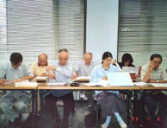
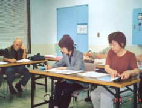
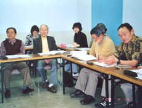
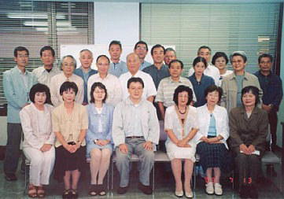
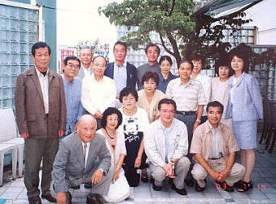
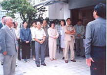

| 見たい項目をクリックして下さい | |||||||||
|
| 行 事 記 録 （詳 細 - ７） |
| 第１回古文書基礎解読教室 |
| 掲載日 ０３−７−２３ |
|
行 事 名 |
第１回古文書基礎解読教室 |
|
研 究 部 会 |
古文書研究会 |
|
実 施 日 |
０３年４月１４日〜７月１４日 ９：３０〜１１：３０ (全１０回) |
|
実 施 場 所 |
神奈川県民活動サポートセンター |
|
参 加 者 |
会員２１名(天野、新井、石田、小方、尾田、小野寺、金田、神津、佐伯、佐々木、 佐藤、三瓶、塩見、柴田、清水、須田、須藤、坪井、堀、村上、野々山） 会員外８名（１期OB７名、 3期現役１名） 合計２９名 ４月１４日（２２）、４月２１日（２２）、５月１２日（２１）、５月１９日（２５）、 |
| 記 録 | 佐伯良江 |
|
概 要 |
横浜市歴史博物館 井上攻先生に、講師をお願いする。先生のご好意により、博物館休館日の月曜日、無償で講義をしていただいた。これはなんといっても、横浜市歴史博物館ボランティアガイドOBにとり、幸せなことであった。 |
|  |  | |||
| 井上先生の授業風景 | ||||
|  |  |  | ||
| 生徒は真剣な中にも和気あいあい | ||||
|  |  | |
| １０回の講習を終了した記念写真 | 終了記念のパーティで |
|  | ||||||
| 堀会長の乾杯 | １期の皆さんも参加 | 天野副会長の閉会挨拶 | ||||
| 記録の一覧表 に戻る |